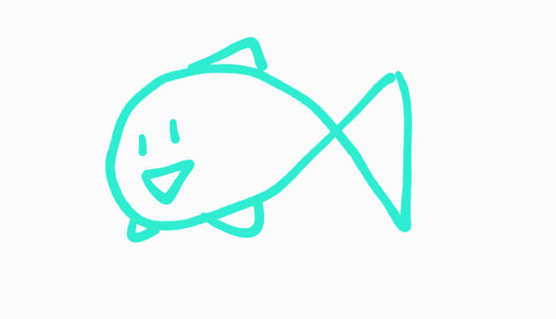
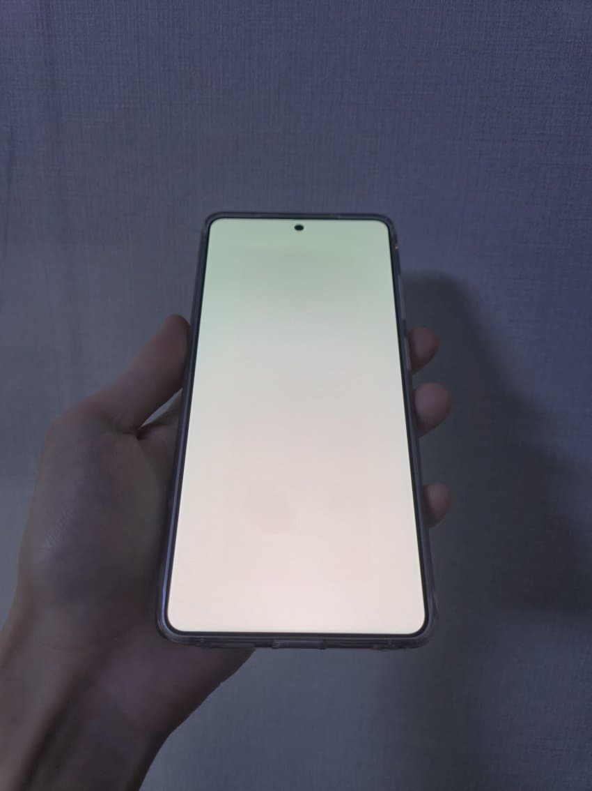
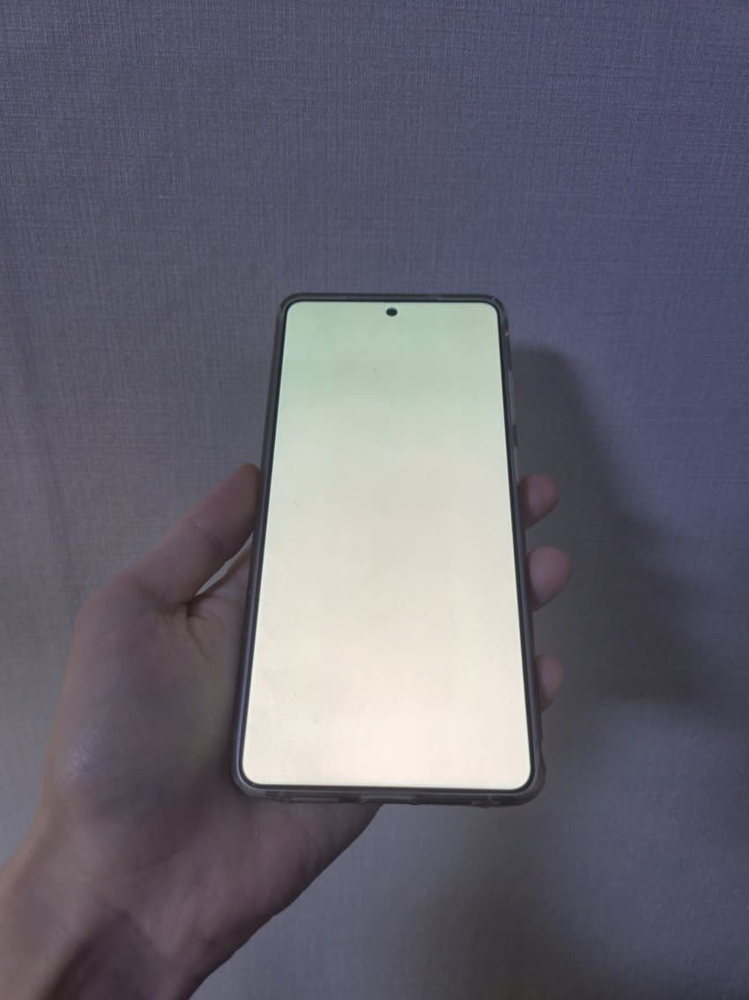
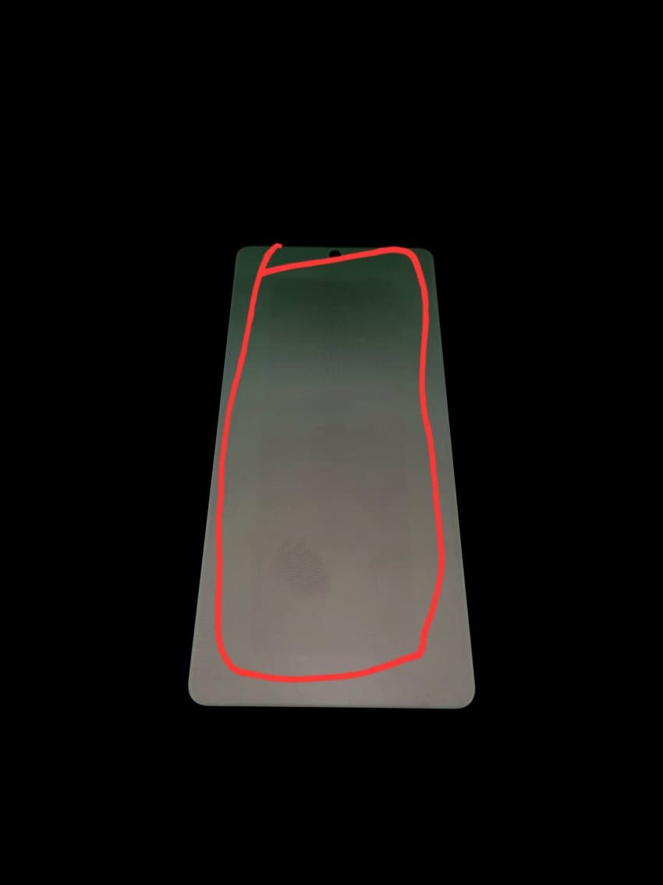
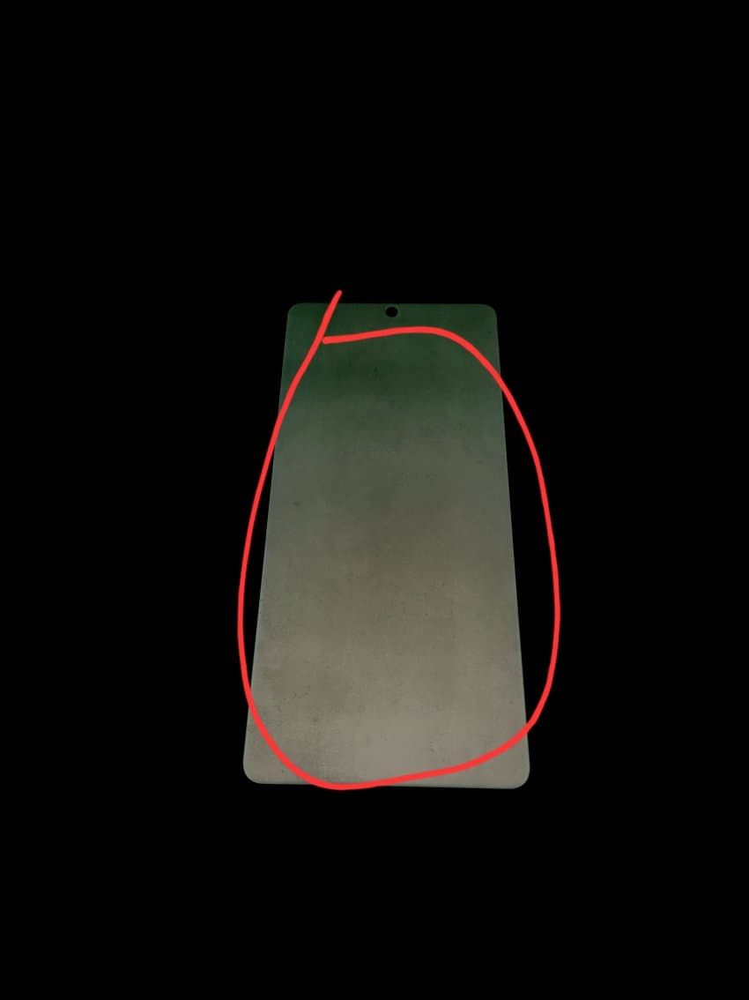
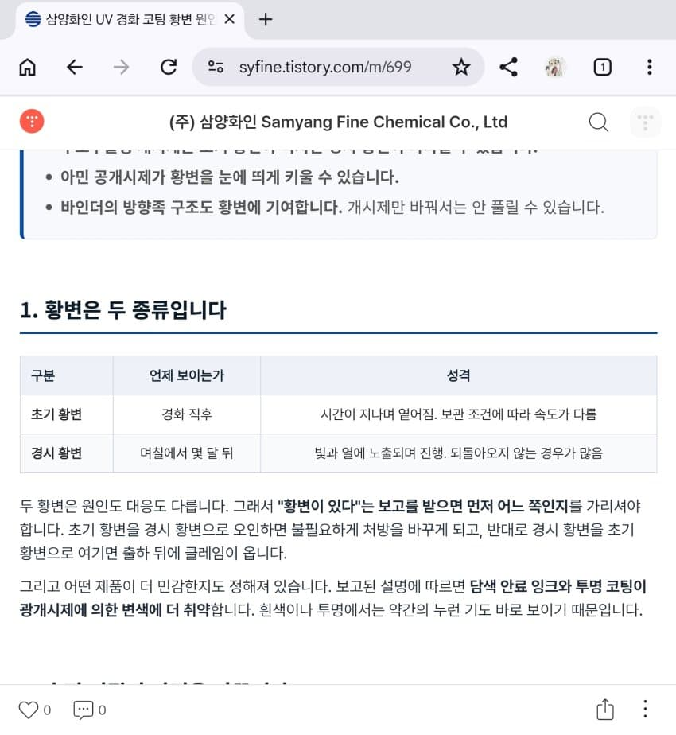
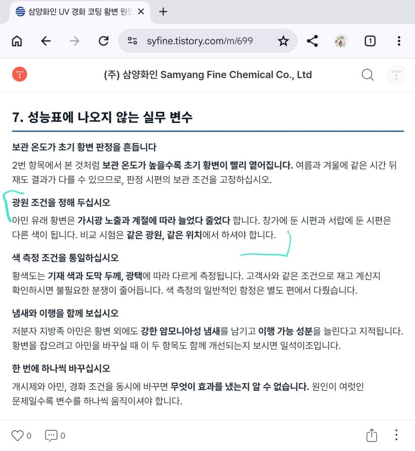
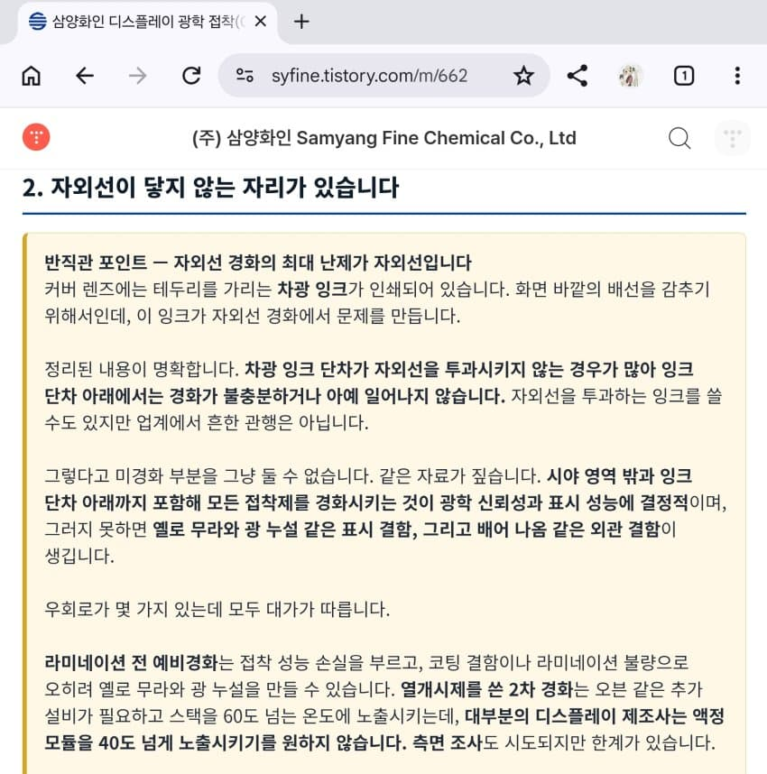

7월

근황

7월

근황
->줄어듦


계절에 따라 바뀌는 증상
+
몇달뒤에 생기는 증상
+
미경화부분 존재(UV형광패턴)

+
번인 이슈 알고있던 친구도 자기 s26u에는 이런거 없다면서 보여주는데
붉은자국보이더라구여
아마도 나는 번인없다는분들도 대다수가 있을거같은데....
댓글
댓글 보관 대기 중입니다. 원문 응답 오류가 있으면 다음 실행에서 다시 수집합니다.